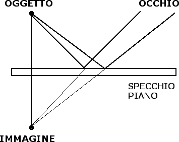
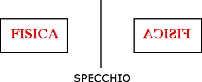

Riflessione e specchi
Immagini reali e immagini virtuali
Cominceremo ora ad applicare le leggi della riflessione per studiare le immagini che si vengono a creare in presenza di uno specchio.
Cominciamo questa analisi considerando il caso di uno specchio piano. Dove appare l'immagine che si forma in uno specchio piano? Ci è chiaro dalla nostra esperienza quotidiana che l'immagine di un oggetto che noi vediamo in uno specchio appare posizionata dietro lo specchio. Usando le leggi della riflessione possiamo capire la ragione di questo fenomeno. Osserviamo la figura seguente:

I prolungamenti di due raggi riflessi si incrociano in un punto che diventa l'immagine dell'oggetto. Da semplici considerazioni geometriche si può dimostrare che la distanza tra l'oggetto e lo specchio è uguale alla distanza tra lo specchio e l'immagine dell'oggetto. Dal momento che tale immagine non esiste nella realtà ma si forma sul prolungamento dei raggi riflessi prodotto dal nostro cervello, si parla di immagine virtuale. Un'immagine si dice invece reale quando si forma al punto di intersezione di raggi luminosi reali.
Se l'oggetto non è puntiforme ma esteso è possibile costruire l'immagine dell'oggetto costruendo le immagini di tutti i suoi punti.

L'immagine e l'oggetto sono simmetrici rispetto allo specchio e hanno le stesse dimensioni.